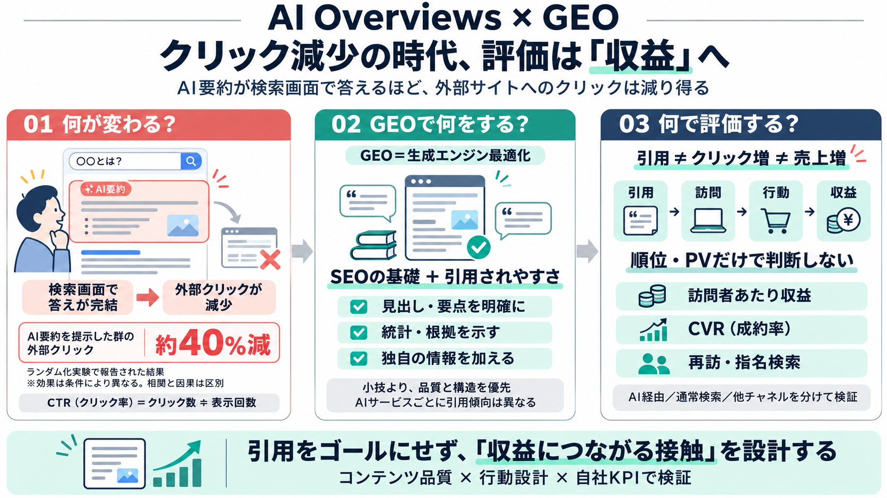

AI Search Optimization: The Complete 2026 Guide to GEO | Yozigo
Generative Engine Optimization (GEO) is the practice of optimizing your content to appear in AI-generated responses. Unl…

定義：検索結果の表示回数に対するクリック回数の割合。
CTR = clicks / impressions
従来：上位＝流入増が主戦略。
変化：画面内で価値提供→外部流入が減る。
露出の上昇（AI Overviews表示率）
CTRの低下（外部クリックが減る）
“順位だけ”では不足になりやすい
言えること：一緒に増減しやすい。
“なぜ”は別（第三要因・選別など）
言えること：介入すると変わり得る。
ランダム化・推定モデルで強化
介入：AI要約の表示有無を比較
（被験者をランダムに割付）
観測：外部クリックが約40%減
→ “相関”以上の根拠に
検索クリック低下
セッションが短縮
外部依存が薄れる
情報の整備：見出し、構造、品質。
引用の成立：AI要約が選びやすい根拠・形式。
（例：統計、明確な答え、オリジナル要素）
引用（citation）は“接触”。
接触→クリック→行動→収益は別ステップ
GEO：引用される文章設計。
同時に：流入後のCVR・再訪・指名なども設計。
引用されやすい構造（見出し・要点）
根拠の提示（統計・E-E-A-Tの文脈）
llms.txt等は効果が読みにくい
例：YouTube / Wikipedia / Reddit
（“誰が引用するか”が基準になる）
最適化は分岐する（単一エンジン前提は危険）
例：訪問者あたり収益、CVR、アトリビューション。
（AI経由はクリック以外の経路にも影響し得る）
切り分け：AI要約経由 / 通常検索 / 他チャネル。
“どの流入が稼ぐか”をページ単位で。
DataForSEO/ Ahrefs/ SISTRIX/ SE Ranking などの計測・解析、研究者のランダム化実験、観察データ、第三者調査、各社の主張（一次/二次情報）
企業データのバイアス可能性、サンプル制約、モデル推定と実測の差、時点（更新頻度）の違いを前提に「自社検証」を優先
Generative Engine Optimization (GEO) is the practice of optimizing your content to appear in AI-generated responses. Unl…
AI search optimization is the practice of structuring and qualifying content so that AI search engines — ChatGPT Search,…
Unlike traditional search, where results appear as a list of links, AI engines synthesize information from multiple sour…
Google does not publish a formula that guarantees citation selection. Treat promises of guaranteed inclusion cautiously.…
Why is Generative Engine Optimization more critical than SEO alone in AI search? Generative Engine Optimization (GEO) …